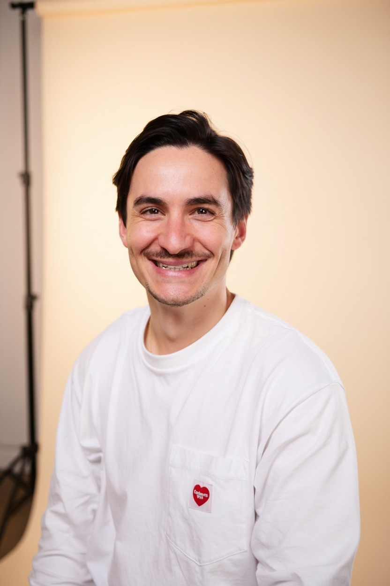

Max (Maxime) Guerois
I build what I wish existed.
29-year-old repeat founder based in Paris. Currently building Lucis — preventive health for Europe, backed by General Catalyst & Y Combinator. I live what I build — my health optimization protocol is the proof of concept.
Ask AI about Max Guerois
Dig into my health protocol, founder story, or longevity obsession.
01 / Work
Lucis
Founder
Bloodwork & AI to catch disease before it happens — 500K+ tests run across France, UK, Ireland & Portugal · $8.5M seed (GC · YC)
Zero Club
Founder
30K+ members across 20+ countries — Europe's longevity community, became Lucis
The Arch
Founder
Connected 1,200+ Web3 founders through events and partnerships
Practup
Founder
Mobile app connecting 25k+ gym and fitness enthusiasts in France
02 / Health


Max Guerois's Biomarkers
If you want to fix low testosterone, here are 31 science-backed tips
3 months of tracking — 7 tips that lead me to high-quality sleep
03 / Press
Seeding the Future with Lucis
Most healthcare systems wait until you're sick to act. That's changing.
I lived like biohacker Bryan Johnson for two years — the shocking effects on my body
04 / Highlights
"Getting bloodwork in Europe is a REAL STRUGGLE"
"2 years ago, we got deep into @bryan_johnson's Blueprint with @Iam_maxb"
"We spent $20k+/month to move 10x faster during YC. Here's how we spent it and why we'd do it again:"
05 / Newsletter
06 / Say hi